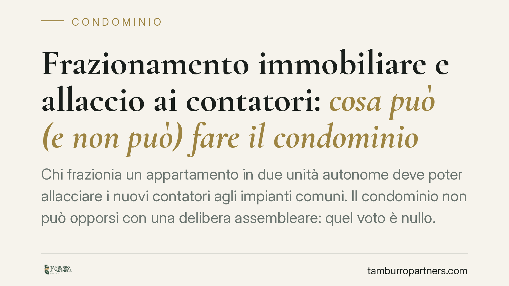

Frazionamento immobiliare e allaccio ai contatori: cosa può (e non può) fare il condominio
Chi frazionia un appartamento in due unità autonome deve poter allacciare i nuovi contatori agli impianti comuni. Il condominio non può opporsi con una delibera assembleare: quel voto è nullo. Restano ferme solo due eccezioni, un divieto scritto nel regolamento contrattuale o un pregiudizio tecnico dimostrato. Vediamo perché il diritto del singolo condòmino prevale e quando invece incontra un limite.

Il caso: dividere casa e chiedere il nuovo allaccio
Il frazionamento di un'unità immobiliare è un'operazione frequente: da un appartamento se ne ricavano due, ciascuno destinato a essere venduto o locato in autonomia. Ogni nuova unità ha bisogno dei propri contatori, cioè di allacci separati agli impianti comuni dell'edificio (acqua, gas, energia).
A questo punto sorge spesso il conflitto. L'assemblea, o l'amministratore, negano l'allaccio o lo subordinano a condizioni: un contributo economico aggiuntivo, il consenso unanime degli altri condòmini, l'approvazione preventiva del progetto. La domanda è semplice: il condominio ha davvero questo potere?
Inquadramento normativo
La risposta parte dall'art. 1117 n. 3 del codice civile, che include tra le parti comuni gli impianti idrici, del gas, dell'energia e simili, fino al punto di diramazione verso le proprietà individuali. Su questi impianti ogni condòmino vanta un diritto di uso in proporzione alla propria quota.
L'uso della cosa comune è funzionale al godimento della proprietà esclusiva. Chi frazionia il proprio appartamento non fa altro che esercitare una facoltà connaturata al diritto di proprietà, e con essa il diritto di servirsi degli impianti comuni per la nuova unità. Il singolo può servirsi della cosa comune purché non ne alteri la destinazione e non impedisca agli altri di farne pari uso.
L'assemblea, ai sensi dell'art. 1135 cod. civ., ha competenze precise: amministrazione, manutenzione, spese. Non ha invece il potere di limitare o condizionare i diritti che spettano al singolo sulle parti comuni. Una delibera che nega l'allaccio incide su un diritto individuale che esula dalle attribuzioni assembleari: per questo è nulla, e la nullità, ex art. 1421 cod. civ., può essere fatta valere da chiunque vi abbia interesse, senza il termine di trenta giorni previsto per l'impugnazione delle delibere semplicemente annullabili.
È una distinzione centrale. La delibera annullabile va contestata entro trenta giorni, altrimenti si consolida. La delibera nulla, invece, non produce effetti e resta contestabile senza limiti di tempo.
Le due eccezioni da conoscere
Il diritto all'allaccio non è però assoluto. Esistono due situazioni in cui il condominio può legittimamente opporsi.
La prima è la presenza di una clausola nel regolamento condominiale di natura contrattuale, cioè accettato da tutti i condòmini in sede di acquisto o approvato all'unanimità. Un simile regolamento può contenere divieti o limiti al frazionamento e agli allacci, perché costituisce un vincolo negoziale che il singolo ha sottoscritto. Attenzione: il regolamento meramente assembleare, approvato a maggioranza, non ha questa forza.
La seconda eccezione è il pregiudizio concreto agli impianti comuni. Se il nuovo allaccio compromette la funzionalità dell'impianto, riduce la portata a danno degli altri o ne mette a rischio la sicurezza, il condominio può opporsi. Ma il pregiudizio va dimostrato, non affermato: serve una perizia tecnica che ne provi l'esistenza in termini oggettivi. Il timore generico o il fastidio non bastano.
Implicazioni pratiche
Per chi frazionia, il messaggio è chiaro: il diritto all'allaccio è la regola, il diniego l'eccezione. Una delibera contraria, se priva di fondamento contrattuale o tecnico, non ha effetto e può essere ignorata o impugnata anche a distanza di tempo.
Per l'amministratore e l'assemblea, l'avvertimento è speculare: negare l'allaccio con una delibera assembleare, senza titolo, espone il condominio a una causa dall'esito prevedibile e alle relative spese.
Cosa fare in concreto
- Verifica il regolamento condominiale e accerta se è contrattuale (accettato da tutti) o assembleare (a maggioranza): solo il primo può contenere limiti opponibili.
- Formalizza per iscritto la richiesta di allaccio all'amministratore, allegando il progetto di frazionamento e i titoli edilizi.
- Conserva ogni verbale e comunicazione: un eventuale diniego assembleare va documentato per poterne contestare la nullità.
- Chiedi una perizia se il condominio invoca un pregiudizio tecnico agli impianti: pretendi che il rischio sia dimostrato, non solo enunciato.
- Consigliamo di valutare l'assistenza legale prima di procedere ai lavori, per calibrare l'intervento sui vincoli effettivi dell'edificio.
Disclaimer
Contributo informativo a cura di Tamburro & Partners - Avv. Giuseppe Tamburro. Non costituisce parere legale.
Ogni condominio ha una storia a sé.
Se gestisci un'amministrazione e vuoi un confronto su una specifica questione condominiale, scrivi allo studio. Ti rispondiamo entro un giorno lavorativo.